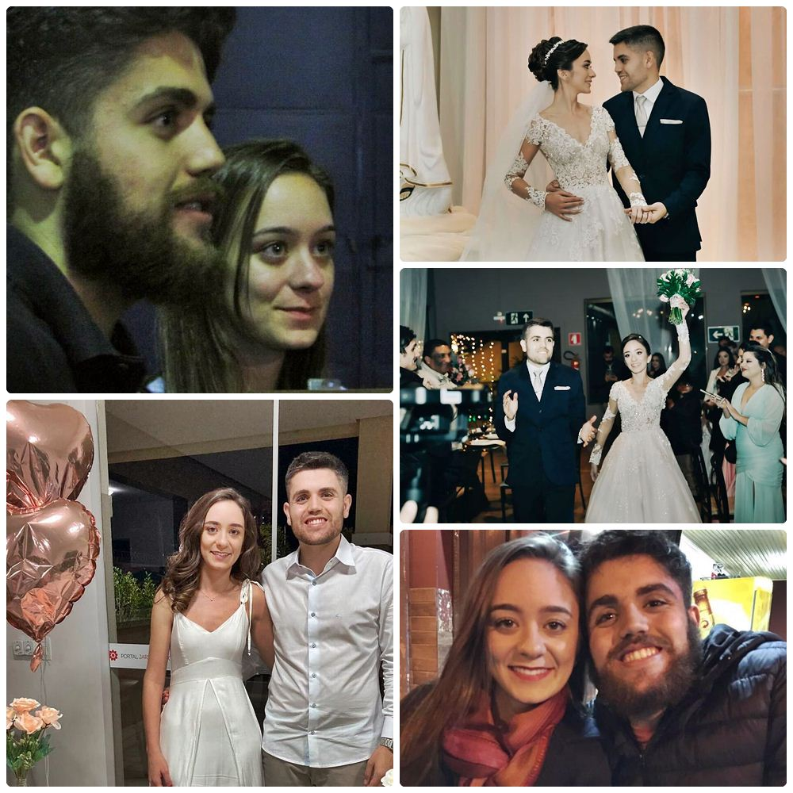

O Samuel fala “amor” — leia com sotaque do interior de minas —, e a Lauri fala “amor” — com sotaque de Varginha, que parece com o interior de São Paulo.
- Ela acorda mais na dela, e ele acorda falando mais do que “o homem da cobra”. Ela gosta de dormir, e ele só dorme o necessário.
O Samuel fala que a sua linguagem de amor é receber muito toque físico. A da Lauri é ser mimada com “atos de serviço” — haja louça pra ele lavar.
Os dois se conheceram em 2015. Ele notou ela desde o início, mas ela só foi prestar atenção algum tempo depois, quando fizeram uma matéria juntos na faculdade.
Nascidos e criados em lugares diferentes, os dois foram se conhecer na cidade de Carlos Drummond de Andrade. Como ele mesmo dizia, “Itabira é apenas uma fotografia na parede”.
- E que bela memória eles construíram nessa cidade. Um misto de emoções que até hoje traz muita saudade.
Foi na festa junina da faculdade, no dia 3 de junho de 2017, que o Samuel deu o primeiro passo, enviando um correio elegante pra Lauri que dizia: “quer dar um UP na minha vida amorosa?”
Ela não imaginava quem era o autor da mensagem, então ele se aproximou, e quando ela perguntou se ele sabia quem tinha mandado, o Samuel respondeu: “Não sei quem fui”.
E foi lá em Itabira que o Samuel e a Lauri deram o seu primeiro beijo. Foi lá que eles começaram a morar juntos, fizeram amizades pra vida toda, trabalharam juntos e cozinharam juntos.
- Foi na terra do Carlos Drummond de Andrade que a paixão dos dois começou. E o amor também.
A pandemia veio apenas 3 meses depois que o Samuel e a Lauri começaram a dividir o mesmo teto. Nas palavras dele, “o que já era junto, ficou ainda mais junto. E que bom que foi assim”.
Mas é claro que nem tudo foi fácil. Eles tiveram que lutar pra fazer dar certo, suportando muitos obstáculos no caminho.
Construíram uma relação de confiança e amor, dando “check” em várias conquistas juntos: o primeiro carro, a primeira viagem e o casamento. Se Deus quiser, em breve virão os filhos.
- Inclusive, quando eles começaram a namorar, o Samuel já sabia que queria o “pra sempre” e mostrou essa música pra Lauri.
Quando pediu pra ela prestar atenção na letra — “que Deus conserve o nosso amor assim: até ficar velhinho” — ela não conseguiu conter as lágrimas. E é claro que essa foi a trilha sonora do casamento.
O Samuel ama fazer churrasco pra Lauri. Ama quando eles ficam conversando até tarde, e ama quando ela tira foto dele dirigindo. Ama quando eles almoçam juntos, e ama trabalhar com ela de “home office”.
Ainda que sejam bons nessa arte de aproveitar o agora, ele ama quando os dois fazem planos pro futuro. Ama conversar sobre as próximas viagens, sobre juntar dinheiro e sobre os filhos que sonham em ter.
- O que ele mais admira nela são seus olhos. Nas palavras de Vinicius de Moraes, “que frio que me dá o encontro desse olhar”.
Mas ele também admira a capacidade que ela tem de ajudar as pessoas. Admira a mulher batalhadora que superou tantos desafios, e conseguiu se formar como engenheira em uma universidade a mais de 400 km da sua cidade natal.
Amanhã, eles completam um ano de casados, e a cada dia que passa, o Samuel tem mais certeza de que o que construíram será pra sempre. Como ele sempre diz: “te amo, e obrigado por me fazer o homem mais feliz do mundo”.
Ficou curioso pra conhecer o Samuel e a Lauri?

{kind=link}
Como bom “último romântico”, ele também fez uma declaração pra ela. Veja Aqui!.
{kind=link}
UPDATE
Pensando na história, esse filme abaixo retrata bem o “amor eterno” que muita gente sonha em construir
Por trás de todo grande amor há uma grande história.
Sinopse: Na década de 40, o operário Noah Calhoun e a rica Allie estão desesperadamente apaixonados, mas os pais da jovem não aprovam o namoro. Quando Noah vai para a Segunda Guerra Mundial, parece ser o fim do romance. Enquanto isso, Allie se envolve com outro homem. Mas quando Noah retorna para a pequena cidade anos mais tarde, próximo ao casamento de Allie, logo se torna claro que a paixão ainda não acabou.